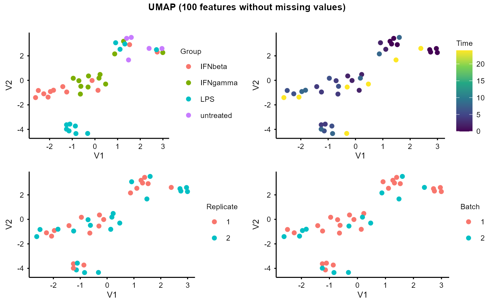
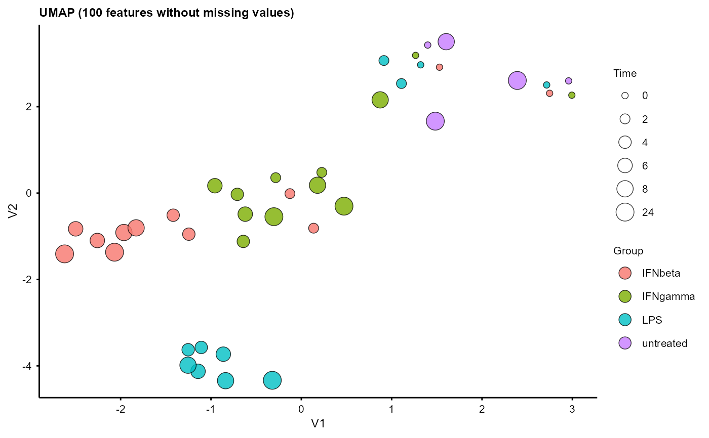
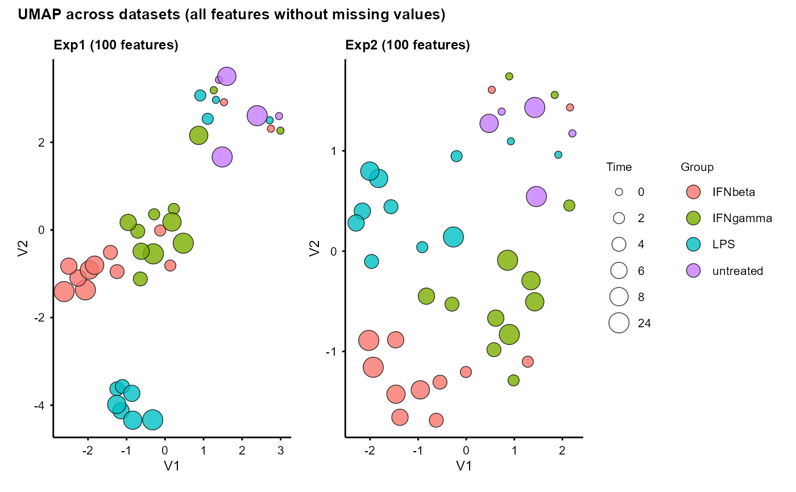

Plot UMAP of samples, using features without missing values
The UMAP plots are labelled by Group, Time, Replicate (if more than 1), Batch (if more than 1), and number of identified features (non-missing values).
Usage
plot_umap(
se_obj,
seed = 1234,
plot_ID = FALSE,
circle = FALSE,
xlim_min = NULL,
xlim_max = NULL,
ylim_min = NULL,
ylim_max = NULL,
umap_neighbors = NULL,
fontsize = 8,
assay = 1,
shared_only = FALSE,
names = NULL
)Arguments
- se_obj
A SummarizedExperiment object created by
create_input(), or a named list of SummarizedExperiment objects (one per dataset)- seed
Random seed for UMAP (default is 1234)
- plot_ID
Whether to include a UMAP plot coloured by number of identified features (default is FALSE)
- circle
Logical, whether to draw circles (ellipses) around samples of each group (default is FALSE)
- xlim_min
Minimum x-axis limit when drawing ellipses (default: NULL, auto-computed with 0.35x padding around the UMAP x range)
- xlim_max
Maximum x-axis limit when drawing ellipses (default: NULL, auto-computed with 0.35x padding around the UMAP x range)
- ylim_min
Minimum y-axis limit when drawing ellipses (default: NULL, auto-computed with 0.35x padding around the UMAP y range)
- ylim_max
Maximum y-axis limit when drawing ellipses (default: NULL, auto-computed with 0.35x padding around the UMAP y range)
- umap_neighbors
UMAP n_neighbors parameter (default is selected by
.umap_n_neighbors()function based on the number of samples)- fontsize
Font size for the plot (default is 8)
- assay
The assay to use in the SummarizedExperiment object: a numeric index or character name, e.g. 1 or "orig" for original data, 2 or "norm" for time 0 normalised data. (Default: 1.)
Logical, whether to subset each dataset to the features shared by all datasets before UMAP (default is FALSE; only applies when
se_objis a list of multiple datasets)- names
Optional character vector of dataset names for the plot titles. Default: NULL, i.e. the names of
se_obj(when a list).
Value
A list with p_list (a named list of ggplot objects) and
umap_layout (a data frame containing UMAP coordinates and sample
annotations for custom plotting). When se_obj is a named list of datasets,
both are named lists (one per dataset) and the combined UMAP plots are
returned as plot.
Examples
data(example_obj)
data(example_obj_2)
umap_out <- plot_umap(example_obj)
#> Using n_neighbors = 8
#> Warning: Using size for a discrete variable is not advised.
umap_out$p_list
#> $p3

#>
#> $p1

#>
umap_multi <- plot_umap(list(Exp1 = example_obj, Exp2 = example_obj_2))
#> Exp1: using n_neighbors = 8
#> Warning: Using size for a discrete variable is not advised.
#> Exp2: using n_neighbors = 8
#> Warning: Using size for a discrete variable is not advised.
umap_multi$plot
